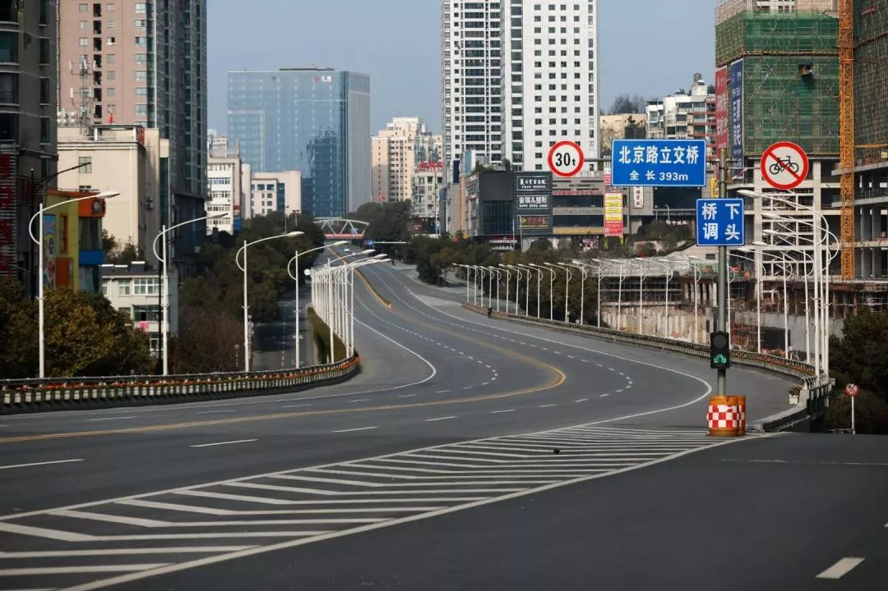
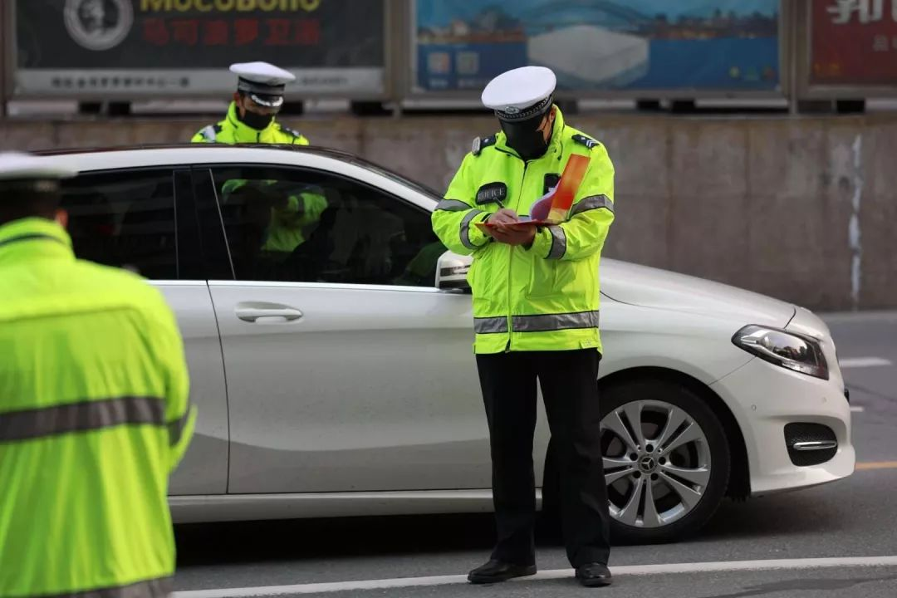
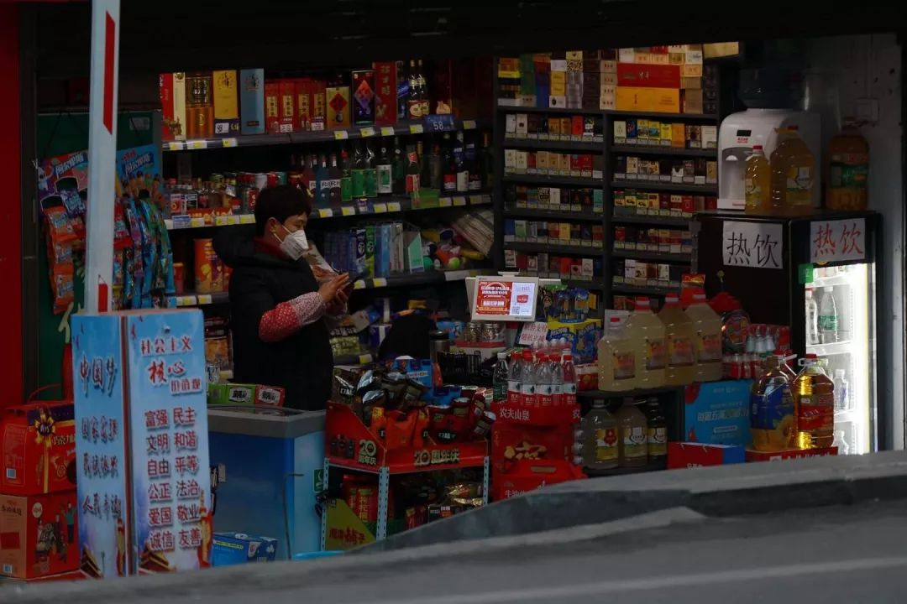
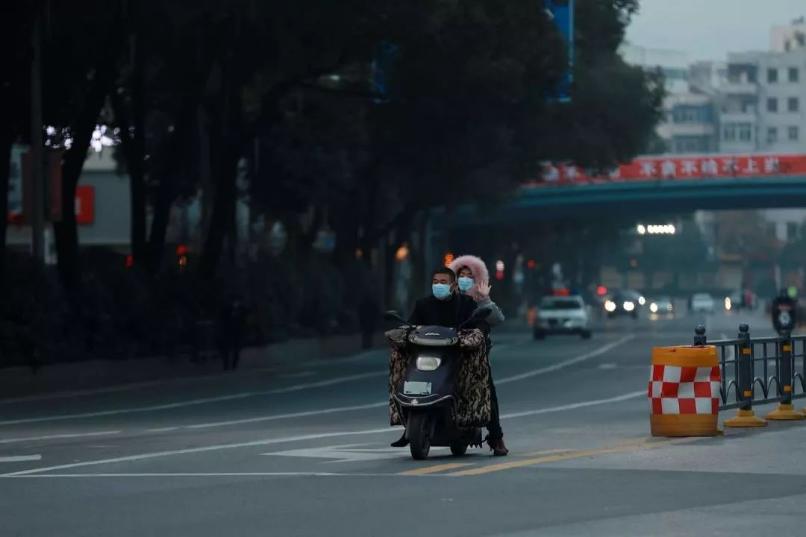
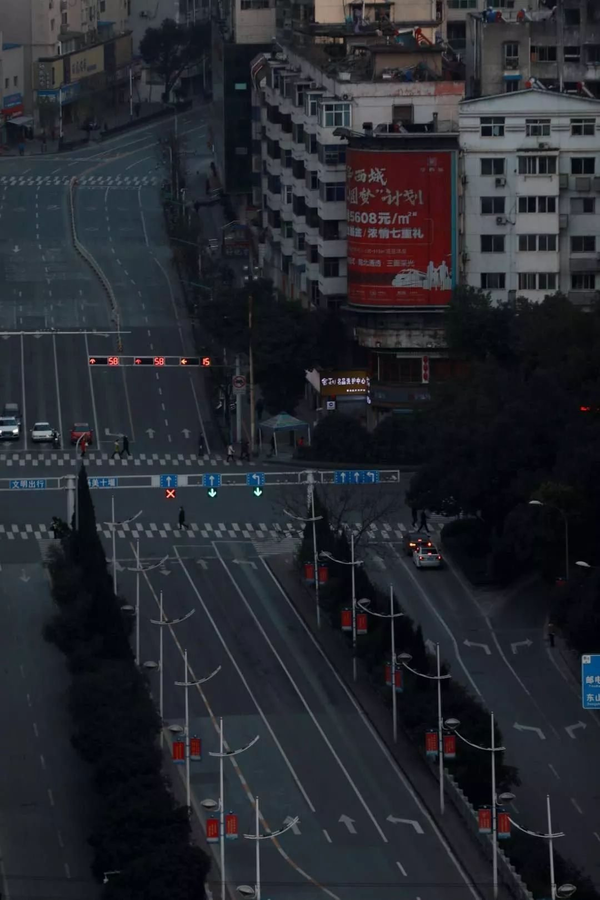

50位武汉人，亲笔写下他们“封城”第一天的生活 | 三明治持续更新中
原文链接 备份链接 昨天是武汉封城第一天，三明治紧急发起了每日书特别版《武汉日常》，邀请人在武汉和家乡在武汉的朋友，一起来用文字忠实记录他们在这个特殊时期的生活日常。 招募一经发出，就有近百位朋友迅速响应，其中有一路哭着坚持回家过年的北 …


- 疫 情 之 下 -
我无比怀念那个热气腾腾、满是活力的城市，只希望它早些归来。
”
2020年鼠年新春，这是我近三十年来，首次未回湖北过年。
年关将至时，喜庆的氛围逐渐笼罩胶东半岛，这也意味着一场长距离的行车之旅，将成为我和先生整个春节的主旋律。
按照计划，我们将从山东烟台出发，先回到他老家菏泽过年，然后在大年初三继续马不停蹄地开车回到鄂西北的小城十堰，我的老家。往返两千多公里的路程，疲惫是肯定的，但对团圆的期盼能够抵挡所有不适。
我们在汽车后备箱里塞满了要带回湖北的新年礼物。那时候我不知道，这趟回家的路途会是困难重重。
与年味同来的是新冠病毒的消息。
1月22日，人民日报快讯上播报新型肺炎已致湖北17人死亡，未过多久，离汉通道开始暂时关闭。网络上关于新型肺炎的消息和防控措施，像是燎原之火，开始在各种社交媒体广泛传播。
我给湖北老家的亲人发去视频通话，反复劝说千万不要出门。家中父母和家中奶奶都是易感人群，让人担忧丛生。母亲安慰我：“没有那么严重啊，现在镇上还是很热闹，再说年货都办完了，肯定不出门了。我昨天去菜市场给你灌腊肠了，过年回来拿啊。”
我想母亲或许不知道，每天从武汉输往全国各地的人流量究竟有多少，而武汉与湖北诸多城市的紧密联系，更会在这场归乡大途中，源源不断地送走无数离开武汉回家团圆的人。
这时候没有人知道，谁的身上已经携带着让人畏惧的病毒。
22号当天下午，我去菏泽一家药店购买了整袋一次性医用口罩，好在山东地区态势不算严重，路上偶尔能够看到将鼻腔武装起来的人。口罩还没有涨价，20个包装的，每袋三块钱，我买了10包。
我猜想这些拿回家也够用了，但那时候压根没料到，我与这些口罩，根本连山东省的地界都没有出。而两日后，我想多购买一些口罩寄回去给亲友的打算，也未能实现。
事件很快愈发严重，就在腊月二十九，武汉多个出城方向的高速口全部关闭，封城是当下直接有力的措施。我问了从武汉回十堰的朋友，她说：“目前没事，正在家中自我隔离。”又劝我，“情况有点严重，你今年还是别回来了。”
那些在医院工作的同学也说：“医院现在危险，十堰情况也不好，你就留在外地吧。”
除夕当天，在武汉患者渐多的情况下，十堰发现1例新冠肺炎病例，随后当地官方媒体公布消息，公交停运，高速和国道全线封闭。继武汉交通停运后，整个湖北省的其他城市相继关闭通道。我内心咯噔一声，不是因为不能回家，我的至亲、多位好友，现在都在湖北，心里怎么能不焦灼。


我反复劝说母亲，让他们千万别再出门了。她似乎也意识到情况严峻，连说不出去了。
03年非典时候，那年我小学五年级，记得学校熬好中药，让学生一定要喝下去。那时候我什么也不懂，病毒、死亡都是极其遥远的事情。放学后家中有母亲等待，餐桌上已有饭菜，少年时期除了成绩不忧不惧。多年后，心里装了事，肩上有了压力，我才知道牵挂的重量。
这个除夕是我记忆中极度无聊、无趣，甚至夹杂畏惧的夜晚了。不似儿时记忆中，我们吃完年夜饭围着炭炉边看电视边说笑，瓜子壳散落一地。等到《难忘今宵》的歌声响起时，父亲便出门放鞭炮。周围邻居也大多是在这时候燃放烟火，一片喜庆和热闹中，新的一年就来临了。
鼠年春晚，热闹还在如常上演，十堰已禁鞭。母亲说，路已经封了，今年就别回来，照顾好自己。
我说：“我情况算好的了，要是现在还在医院上班，这一天可能就在值班了。”可这玩笑实在太轻薄了，以至于话音刚落，我的心就酸涩不堪。
我不知道，那些曾一起在医学院就读，而今忙碌在医护岗位上的同学，如今有多少人投身到了这场战役中。在别人阖家团圆之际，他们是怎样草草扒完几口饭，又穿上防护服，忙碌在重症监护室和病房，直到脸颊被口罩勒出红印也不能摘下。
在黄冈的一位同学，她是护士，老公则是当地的一名医生，新冠病毒席卷时他去做了志愿者。
她说：“说起来上一线是光荣的事情，但是接到电话的那一刻，还是真的怕，怕回不来，怕感染，怕吃不好睡不好。”可她还是支持他去了，自己照顾年幼的孩子和长辈，同时她也要上班，还得坚守在护理岗位。
我不知道能帮上什么忙，似乎除了默默祈祷平安，再无其他方法。
对于大多数普通医护人员来说，救死扶伤是应尽的职责，可当疫情来临时，是他们冲到了最前头。我放弃了做白衣天使的选择，因此更为敬佩仍旧坚守着一袭白衣的那些人。
还没有回湖北过年时，我和好几个朋友约了过年小聚，态势发展到这地步，所有计划只能搁置。我发信息询问他们的状况，好在情况都十分稳定，可我知道，实际或许比他们所说的要糟糕一些。
湖北省的全部城市，几乎都开始处于封闭状态。老家的妹妹向我发来照片，村子已被堵住，能够看到警车的踪影。


同时，城市关闭商城、影院的消息纷至沓来。在朋友圈中，那些我熟悉的街道上，几乎只有寥寥数车经过。整座城市像被时间按下了暂停键，露出了它从未有过的寂寞的、冷清的模样。
我曾经厌烦过拥堵不堪的交通、灰尘漫天的公路、喧嚣嘈杂的人群，此时此刻它们沉默不语。我无比怀念那个热气腾腾、满是活力的城市，只希望它早些归来。


媒体公布的确诊病人数量还在增加，过了大年初一，我和先生商量依现在境况，肯定是回不去湖北的，与其这样，还不如初三就赶路回烟台。
但计划怎么赶得上变化，初二一醒来，我们就听到菏泽在封村的消息。
按照公婆传来的最新状况，各个村口已经开始拉红条幅封路，我们当即决定这天就离开，否则还不知道需要待到什么时候。手忙脚乱地收拾行李，出发时距我们做出离开的决定，只过去了半个小时。
但态势则陡变，村子里已经有人在拦路，过往车辆只能出不能进，而且一旦外出将不能返回。我们一路疾驰，担心还没有到达高速路口便被拦下。
一路上能够看到有人在粘贴横幅，大货车堵在了进村的分叉口，更为惊险的是我们按照导航往高速口开，看见有叉车在运大石墩封锁公路。绿灯刚亮起，我们就迅速超过了那辆叉车，透过后视镜一看，与我们相距百米的另一辆车，则被堵在了后面，看情况只能绕道前行。
好在齐鲁大地上高速畅通，中途我们在服务区暂时休息片刻，能够看到大多数人都戴着口罩。大家匆匆而来，又匆匆离开。
等到傍晚夜色降临时，我们终于在经历高速出口测量体温之后，安全赶回烟台，进村的路口也被封了。有人拿着手电筒过来问我们从哪里回来的，又看了看是当地的车牌，才允许我们将车开入。
回到熟悉的屋子，我才意识到距我们离开，刚过去不到一周的时间。当初回家过年的计划似乎言犹在耳，可这一番突如其来的变故，让人发现迅疾的时间中，竟然留下了这么多的记忆。
第二天，所有的路都被铁丝网围住。直到我写下这些话的此刻，村庄寂静，像中国无数个正在休憩的城镇、村落一般，它在等待春暖花开的一刻。
生活依旧平静而规律，看书写作刷视频，在短视频平台上，我看到很多人在玩“家中一日游“，因为长久无聊的假期，不少人开创了各种在家游玩的项目。
我其实是很羡慕的，在发生重大事情时，其实人是很想和家人待在一起的，哪怕只是看电视、聊天，只要互相陪伴。这些看似微不足道的事情，是我走了一千多公里也未能得到的幸福。
如果你此刻还在父母身边，是否能够多陪陪他们。如果你也有朋友，奋战在疫情一线，记得对他们说声感谢。
经过前几天的雨天和阴沉，这两日太阳终于探出头。我相信，阳光将与逐渐增多的好消息一起，划开冬日末梢的深霾。这个春节，是我未能回湖北的一年，像那些因为疫情留在了原地的荆楚儿女一样，家人在故乡，而我在远方。
盼望着，故乡痊愈张开怀抱，等我们回家。
-EN
作者 | 简一，青年作者。
摄影 |3h
“我故”故事练习生培养计划，详情请戳：

About us
主编：鹿｜本期编辑：鹿
Contact us
投稿/商务合作/咨询
微信后台留言 or 邮箱：wmsygsdr@163.com
**我们是有故事的人｜华中科技大学出版社官方故事平台**
原文链接 备份链接 昨天是武汉封城第一天，三明治紧急发起了每日书特别版《武汉日常》，邀请人在武汉和家乡在武汉的朋友，一起来用文字忠实记录他们在这个特殊时期的生活日常。 招募一经发出，就有近百位朋友迅速响应，其中有一路哭着坚持回家过年的北 …
原文链接 备份链接 文/讲述人 编辑/诗佳 自1月23日10点武汉正式封城后，为了进一步阻止疫情的扩散，武汉及其他周边城市也陆续做出封城举措。仿佛一夜之间，整个湖北省完全进入了封闭的状态。 据国家统计局2018年统计数据，湖北省常住人口约 …
原文链接 备份链接 - 疫 情 之 下 - 过年那天晚上，一家人气氛十分怪异，一双儿女居然对我有点回避。往年都是一左一右挂在我身上，找我要红包，今年都刻意保持着距离。 ” 1 2020年1月10，春运正式开始拉开帷幕，由于大规模的人口迁 …
原文链接 备份链接 数据来源：腾讯新冠肺炎疫情实时追踪 截至2月4日上午7时16分， 全国新型肺炎确诊个案超过19700例。 距离武汉封城，已经过去了11天。 普通人被困家中，医护人员依然奋战在一线…… 在抗 …
原文链接 备份链接 - 疫 情 之 下 - 只有在这样的特殊时刻，我们才体会到平平常常的日子是多么美好，多么幸福…… ” 疫情爆发得如此迅猛，让所有人始料未及。 己亥年腊月二十九，公历2020年1月23日，我去单位上年前最后一天班，那时我 …